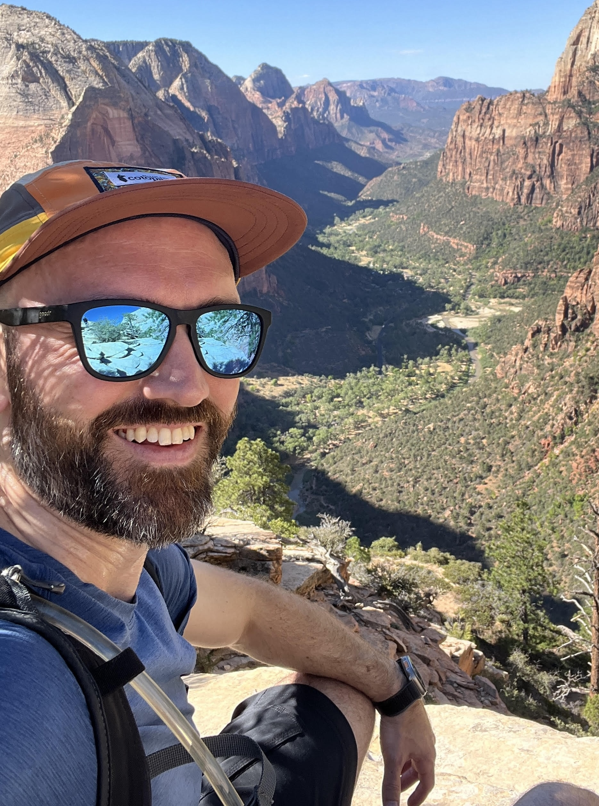

|
Scott Kuindersma
I'm the senior director of robotics research at Boston Dynamics, where I lead teams working on a mix of reinforcement learning, robot foundation models, and control.
At BD, I've led behavior development on Atlas, which we've showcased at times with demonstrations of gymnastics, parkour, dance, and both practical and impractical manipulation.
Prior to BD, I was an assistant professor engineering and computer science at Harvard. I did my PhD at UMass Amherst with Andy Barto and Rod Grupen working on policy learning for robots. I did my postdoc with Russ Tedrake in the RLG @ MIT CSAIL, during which time I was also the controls lead for the MIT DARPA Robotics Challenge team.
My research is about making robots do new and amazing things. I used to write academic papers, but now I make commercial robots better and occasionally give talks and make YouTube videos.
Besides robot stuff, I love spending time with my amazing wife and two kids. I also like mountain biking, skiing, playing guitar, rock climbing, and riding my Triumph Thruxton.
Email /
Scholar /
LinkedIn
|

|
{kind=link}